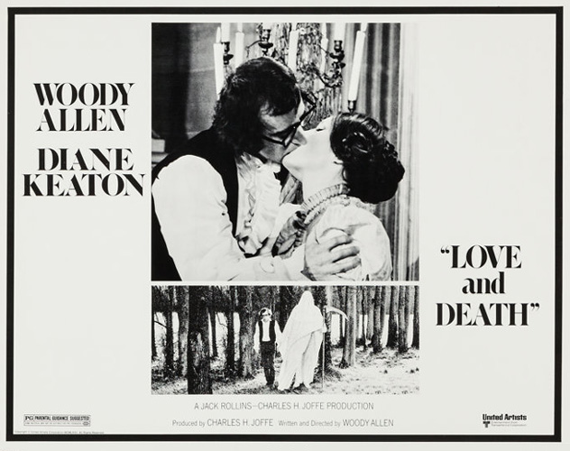
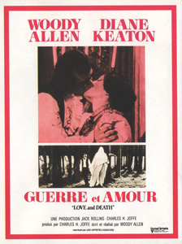
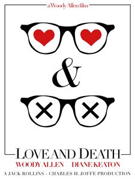
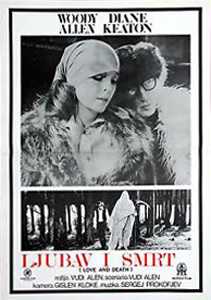
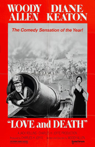
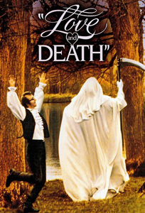
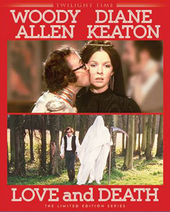

When Napoleon (James Tolkan) invades Austria during the Napoleonic Wars, Boris Grushenko (Woody Allen), a coward and pacifist scholar, is forced to enlist in the Russian Army. He is desperate and disappointed after hearing the news that Sonja (Diane Keaton), his cousin is to wed a herring merchant.
A total disaster as a soldier, Allen's cowardice serves him well when he hides in a cannon and is shot into a tent of French soldiers, suddenly making him a national hero. After his cousin agrees to marry him thinking he'll be killed in a duel, he miraculously survives, the couple must hatch a ludicrous plot to assassinate Napoleon in order to keep the coward Allen out of yet another war. Their marriage is filled with philosophical debates, and no money.
Their life together is interrupted when Napoleon invades the Russian Empire. Boris and Sonja debate the matter with some degree of philosophical double-talk, and Boris reluctantly goes along with it. They fail to kill Napoleon and Sonja escapes arrest while Boris is executed, despite being told by a vision that he will be pardoned.
Love and Death is a satirical take on Russian epic novels. Coming between Sleeper and Annie Hall, is in many respects an artistic transition between the two. Allen pays tribute to the humour of The Marx Brothers, Bob Hope and Charlie Chaplin throughout this film. It is the last of Allen's movies that try to get as many laughs as possible, but despite this contains a lot of commentary on philosophy and this balance is possibly why Allen considers it one of his best and most personal films. The dialogue and scenarios parody Russian novels, particularly those by Dostoyevsky and Tolstoy, such as The Brothers Karamazov, Crime and Punishment, The Gambler, The Idiot and War and Peace. This includes a dialogue between Boris and his father, with each line alluding to or being composed entirely of Dostoevsky titles.
Some of the humour is straightforward; other jokes rely on the viewer's awareness of classic literature or contemporary European cinema. For example, the final shot of Keaton is a reference to Ingmar Bergman's Persona. The sequence with the stone lions is a parody of Sergei Eisenstein's Battleship Potemkin, while the Russian battle against Napoleon's army heavily parodies the same film's "Odessa Steps" sequence. The plotline involving the Countess, her jealous lover and his duel-gone-awry with Allen's character is a homage to Bergman's Smiles of a Summer Night. Bergman's The Seventh Seal is parodied several times and the Totentanz at the end is lifted entirely.
Allen shot the film outside of the United States, in France and Hungary, where he had to deal with bad weather, spoiled negatives, food poisoning and physical injuries, as well as multi-lingual crews and extras who had difficulty communicating with each other, and with Allen. This made the director swear never to shoot a movie outside the US again.
However, starting 21 years later in 1996 with Everyone Says I Love You, Allen did in fact shoot a number of other movies outside the US.
The use of Prokofiev on the soundtrack adds to the Russian flavour of the film. Prokofiev's "Troika" from the Lieutenant Kijé Suite is featured prominently, for the film's opening and closing credits, and in selected scenes in the film when a "bouncy" theme is required. The battle scene is accompanied with the music from Sergei Eisenstein’s film Alexander Nevsky (Prokofiev's cantata: Alexander Nevsky). Boris is marched to his execution to the "March" from Prokofiev's The Love for Three Oranges. In addition, the overture to Mozart's The Magic Flute features in the scene at the opera.
"Love and Death is an almost total treat." - Geoff Andrew : Time Out
"Besides being one of Woody's most consistently witty films, Love and Death marks a couple of other advances for Mr. Allen as a film maker and for Miss Keaton as a wickedly funny comedienne." - Vincent Canby : New York Times





